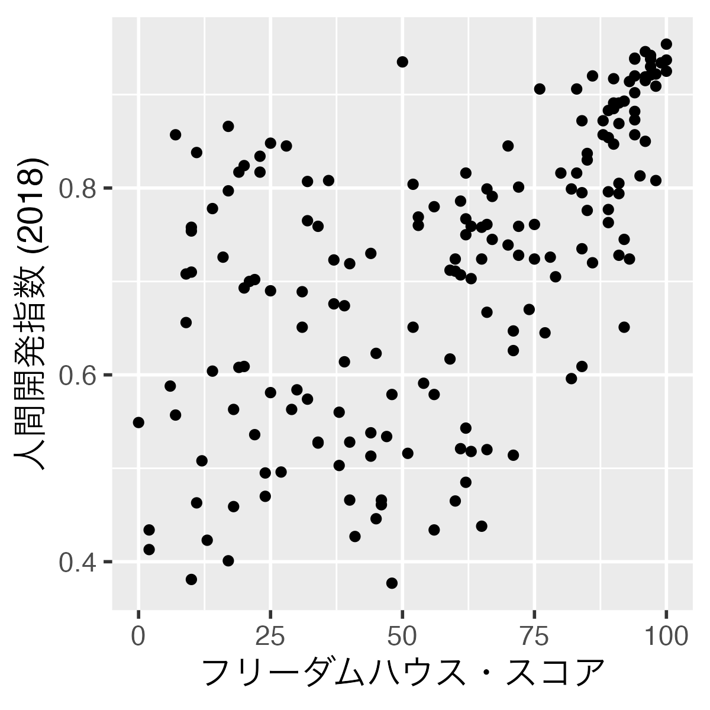
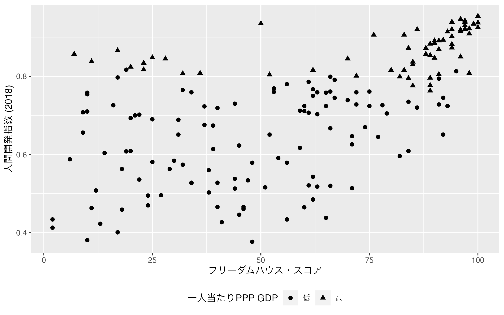
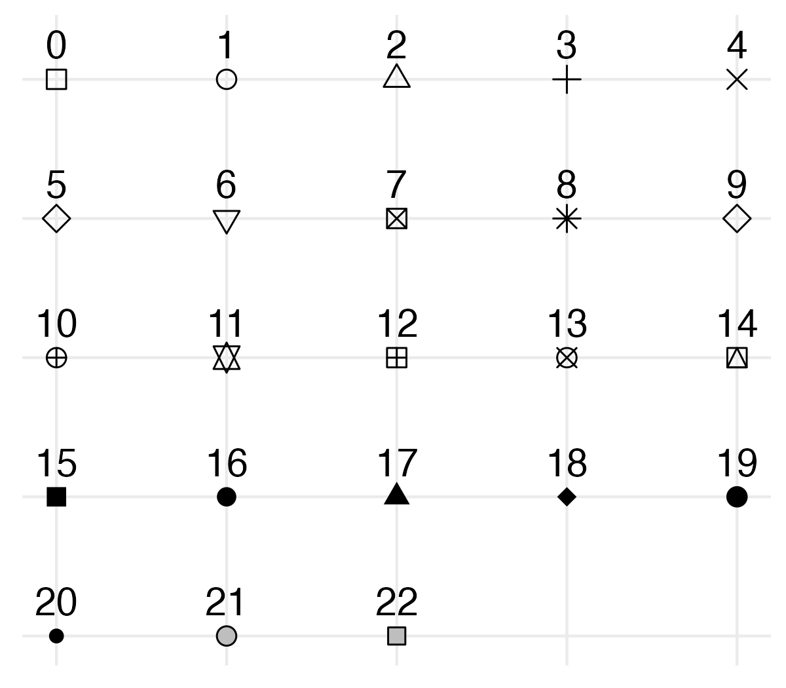
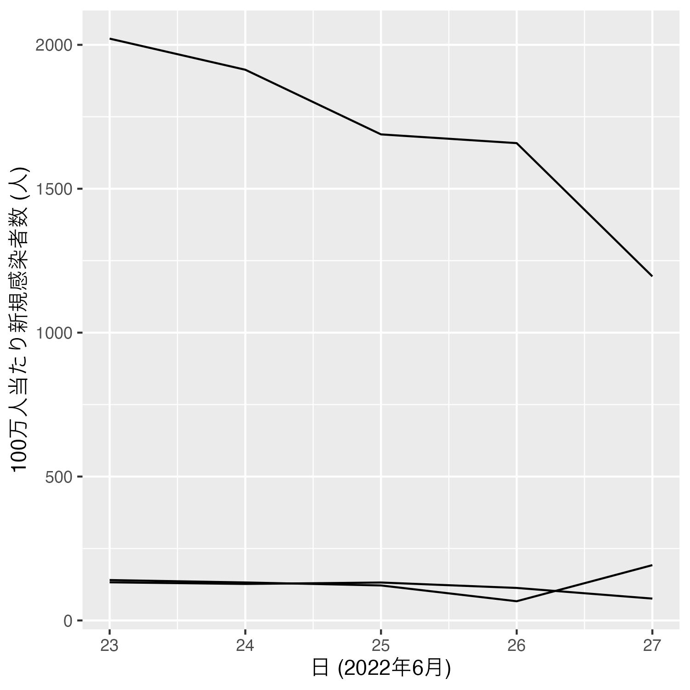
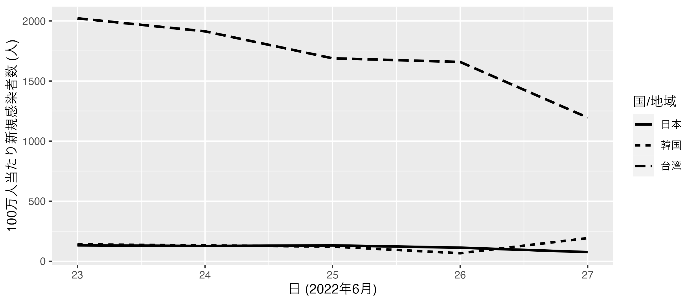
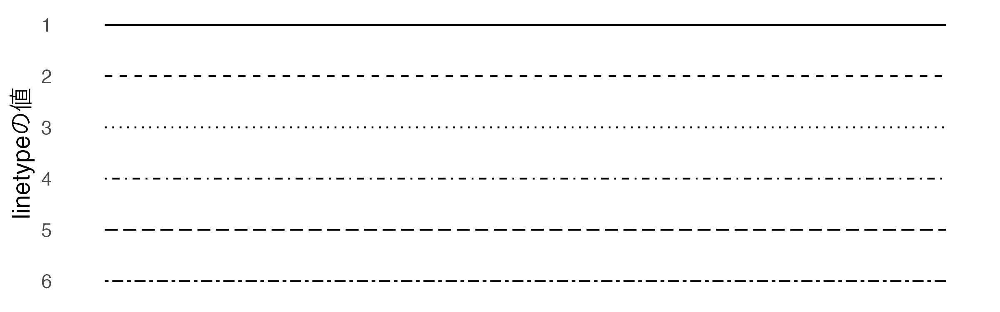
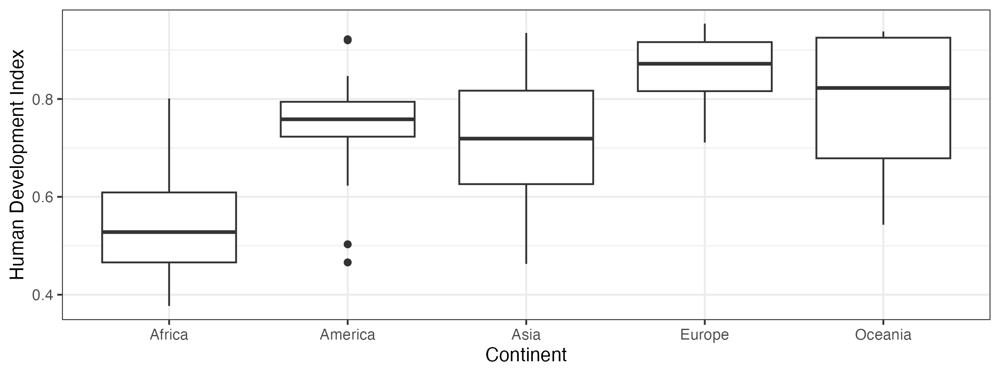
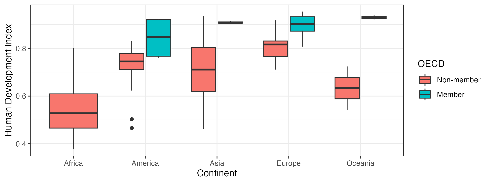

第14回講義資料
可視化 (3)
スライド
散布図
散布図の作成
散布図は2つの連続変数（=間隔尺度、比率尺度で測定された変数）間の関係を調べる代表的な可視化方法である。散布図を作成する際に必要な最低限の情報、つまり散布図の必須要素は何だろうか。例えば、 図 1 の例を考えてみよう。この散布図はフリーダムハウスのスコアと人間開発指数の関係を表す散布図である。それぞれの点は一つの観察（国 or 地域）を意味する。散布図は2次元平面上に複数の点を載せたものであるが、それぞれの点はどのような情報を含んでいるのか。それは、その国（ or 地域）のフリーダムハウス・スコアと人間開発指数であり、それぞれ横軸の上の位置と縦軸上の位置から、その情報が読み取れる。
それでは 図 1 を作ってみよう。使用するデータは第9回実習用データ（countries.csv）である。
散布図を作成するためにはgeom_point()幾何オブジェクトを使用する。点の横軸上の位置はxに、縦軸上の位置はyにマッピングする。もし2つの変数の間に原因と結果の関係（因果関係）が考えられる2変数の場合、原因を横軸、結果を縦軸にするのが通例である。
しかし、横軸と縦軸のタイトルがFH_Total、HDI_2018になっている。図を作った人から見れば、これが何を意味するのか分かるだろうが、この図を初めて見る人にとっては何を意味するのかが分からないだろう。したがって、ラベル修正を修正し、せっかくなので点の色をおしゃれなロイヤルブルー（royal blue）にしてみよう。
次元の追加
通常の散布図、例えば先ほど作成した散布図には、それぞれの点は各国の (1) フリーダムハウス・スコアと (2) 人間開発指数といった2つの情報を持つ。つまり、通常の散布図は2次元である。しかし、散布図は5次元、7次元までにも拡張することができる。たとえば、大陸ごとに色分けをすることによってもう一つの情報を持たせることも可能だし、人口や所得に応じて点の大きさを変えることも可能だろう。また、定番のファセット分割もできる。他にも点の枠線、点の形、透明度などに何かの情報を持たせることも可能である。
このように高次元の散布図を作ることはできる。ただし、宋は3次元までを推奨する（ファセット分割まで入れる場合、4次元）。なぜなら、一つのグラフの情報が多すぎると読みにくくなるからである。 図 2 は5次元散布図の例である。各点はフリーダムハウス・スコア、人間開発指数、人口（対数変換）、大陸、OECD加盟有無の情報を持つ。
Code 04
df |>
mutate(OECD = if_else(OECD == 1, "Member", "Non-member")) |>
ggplot() +
geom_point(aes(x = FH_Total, y = HDI_2018, color = Continent,
size = Population, shape = OECD), alpha = 0.65) +
scale_size_continuous(trans = "log10") +
labs(x = "Freedom House Score", y = "Human Development Index (2018)",
size = "Population (log)") 2次元散布図にもう一つの次元を追加、つまり3次元散布図を作成する場合は色分け（color）を推奨するが、白黒の図を作成する場合は形（shape）を使う必要がある。まずは色分けから説明しよう。色分けをする場合は、aes()の内部にcolor = 色分けする変数を指定する。
たとえば、一人上がり購買力平価GDP（PPP_per_capita）が2万ドル以上か未満かで点の色分けをするとしよう。まず、PPP_per_capitaが2万以上なら"高"、未満なら"低"にリコーディングしたHighIncome変数を作成する。つづいて、このHighIncome変数を利用し、点の色分けを行う（color = HighIncome）
他のカスタマイズとしては作図する側の自由であるが、ここでは点の大きさは2にし（全体に適用させるため、aes()の外側に指定）、labs()内で凡例タイトルを修正し、凡例を下側へ移動してみる。作成した図はscatter_plot1という名のオブジェクトとして格納しておく。
Code 05
scatter_plot1 <- df |>
# 散布図に使われる変数が一つでも欠損していれば、その行（国）は除外する
drop_na(FH_Total, HDI_2018, PPP_per_capita) |>
# リコーディング
mutate(HighIncome = if_else(PPP_per_capita >= 20000, "高", "低")) |>
ggplot() +
geom_point(aes(x = FH_Total, y = HDI_2018, color = HighIncome),
size = 2) +
# ラベル修正
labs(x = "フリーダムハウス・スコア", y = "人間開発指数 (2018)",
color = "一人当たりPPP GDP") +
# 凡例を下側に
theme(legend.position = "bottom")
scatter_plot1 もし、点の色を変更したい場合はscale_color_manual()レイヤーを追加する。引数はvaluesであり、c("値1" = "色1", "値2" = "色2", ...)のように名前付きcharacter型ベクトルを指定する。たとえば、HighIncomeの値が"低"ならオレンジ色（"orange"）、"高"ならロイヤルブルー色（"royalblue"）にしてみよう。
{ggplot2}で使える色は無数にある。"red"、"blue"、"royalblue"のように文字で指定することもでき、全657種類が用意されている1。他にもRGBカラー（HEXコード; 16進数）で指定することもでる。たとえば赤なら"#FF0000"、ロイヤルブルーなら"#4169E1"と表記する。HEXコードを使う場合、非常に細かく色を指定することができ、全16,777,216種類の色が使える。以下の例はRで使える色の一部である。
Rで使用可能な色のリストはコンソール上でcolors()を打ち込むと確認できる。
[1] "white" "aliceblue" "antiquewhite"
[4] "antiquewhite1" "antiquewhite2" "antiquewhite3"
[7] "antiquewhite4" "aquamarine" "aquamarine1"
[10] "aquamarine2" "aquamarine3" "aquamarine4"
[13] "azure" "azure1" "azure2"
[16] "azure3" "azure4" "beige"
[19] "bisque" "bisque1" "bisque2"
[22] "bisque3" "bisque4" "black"
[25] "blanchedalmond" "blue" "blue1"
[28] "blue2" "blue3" "blue4"
[31] "blueviolet" "brown" "brown1"
[34] "brown2" "brown3" "brown4"
[37] "burlywood" "burlywood1" "burlywood2"
[40] "burlywood3" "burlywood4" "cadetblue"
[43] "cadetblue1" "cadetblue2" "cadetblue3"
[46] "cadetblue4" "chartreuse" "chartreuse1"
[49] "chartreuse2" "chartreuse3" "chartreuse4"
[52] "chocolate" "chocolate1" "chocolate2"
[55] "chocolate3" "chocolate4" "coral"
[58] "coral1" "coral2" "coral3"
[61] "coral4" "cornflowerblue" "cornsilk"
[64] "cornsilk1" "cornsilk2" "cornsilk3"
[67] "cornsilk4" "cyan" "cyan1"
[70] "cyan2" "cyan3" "cyan4"
[73] "darkblue" "darkcyan" "darkgoldenrod"
[76] "darkgoldenrod1" "darkgoldenrod2" "darkgoldenrod3"
[79] "darkgoldenrod4" "darkgray" "darkgreen"
[82] "darkgrey" "darkkhaki" "darkmagenta"
[85] "darkolivegreen" "darkolivegreen1" "darkolivegreen2"
[88] "darkolivegreen3" "darkolivegreen4" "darkorange"
[91] "darkorange1" "darkorange2" "darkorange3"
[94] "darkorange4" "darkorchid" "darkorchid1"
[97] "darkorchid2" "darkorchid3" "darkorchid4"
[100] "darkred" "darksalmon" "darkseagreen"
[103] "darkseagreen1" "darkseagreen2" "darkseagreen3"
[106] "darkseagreen4" "darkslateblue" "darkslategray"
[109] "darkslategray1" "darkslategray2" "darkslategray3"
[112] "darkslategray4" "darkslategrey" "darkturquoise"
[115] "darkviolet" "deeppink" "deeppink1"
[118] "deeppink2" "deeppink3" "deeppink4"
[121] "deepskyblue" "deepskyblue1" "deepskyblue2"
[124] "deepskyblue3" "deepskyblue4" "dimgray"
[127] "dimgrey" "dodgerblue" "dodgerblue1"
[130] "dodgerblue2" "dodgerblue3" "dodgerblue4"
[133] "firebrick" "firebrick1" "firebrick2"
[136] "firebrick3" "firebrick4" "floralwhite"
[139] "forestgreen" "gainsboro" "ghostwhite"
[142] "gold" "gold1" "gold2"
[145] "gold3" "gold4" "goldenrod"
[148] "goldenrod1" "goldenrod2" "goldenrod3"
[151] "goldenrod4" "gray" "gray0"
[154] "gray1" "gray2" "gray3"
[157] "gray4" "gray5" "gray6"
[160] "gray7" "gray8" "gray9"
[163] "gray10" "gray11" "gray12"
[166] "gray13" "gray14" "gray15"
[169] "gray16" "gray17" "gray18"
[172] "gray19" "gray20" "gray21"
[175] "gray22" "gray23" "gray24"
[178] "gray25" "gray26" "gray27"
[181] "gray28" "gray29" "gray30"
[184] "gray31" "gray32" "gray33"
[187] "gray34" "gray35" "gray36"
[190] "gray37" "gray38" "gray39"
[193] "gray40" "gray41" "gray42"
[196] "gray43" "gray44" "gray45"
[199] "gray46" "gray47" "gray48"
[202] "gray49" "gray50" "gray51"
[205] "gray52" "gray53" "gray54"
[208] "gray55" "gray56" "gray57"
[211] "gray58" "gray59" "gray60"
[214] "gray61" "gray62" "gray63"
[217] "gray64" "gray65" "gray66"
[220] "gray67" "gray68" "gray69"
[223] "gray70" "gray71" "gray72"
[226] "gray73" "gray74" "gray75"
[229] "gray76" "gray77" "gray78"
[232] "gray79" "gray80" "gray81"
[235] "gray82" "gray83" "gray84"
[238] "gray85" "gray86" "gray87"
[241] "gray88" "gray89" "gray90"
[244] "gray91" "gray92" "gray93"
[247] "gray94" "gray95" "gray96"
[250] "gray97" "gray98" "gray99"
[253] "gray100" "green" "green1"
[256] "green2" "green3" "green4"
[259] "greenyellow" "grey" "grey0"
[262] "grey1" "grey2" "grey3"
[265] "grey4" "grey5" "grey6"
[268] "grey7" "grey8" "grey9"
[271] "grey10" "grey11" "grey12"
[274] "grey13" "grey14" "grey15"
[277] "grey16" "grey17" "grey18"
[280] "grey19" "grey20" "grey21"
[283] "grey22" "grey23" "grey24"
[286] "grey25" "grey26" "grey27"
[289] "grey28" "grey29" "grey30"
[292] "grey31" "grey32" "grey33"
[295] "grey34" "grey35" "grey36"
[298] "grey37" "grey38" "grey39"
[301] "grey40" "grey41" "grey42"
[304] "grey43" "grey44" "grey45"
[307] "grey46" "grey47" "grey48"
[310] "grey49" "grey50" "grey51"
[313] "grey52" "grey53" "grey54"
[316] "grey55" "grey56" "grey57"
[319] "grey58" "grey59" "grey60"
[322] "grey61" "grey62" "grey63"
[325] "grey64" "grey65" "grey66"
[328] "grey67" "grey68" "grey69"
[331] "grey70" "grey71" "grey72"
[334] "grey73" "grey74" "grey75"
[337] "grey76" "grey77" "grey78"
[340] "grey79" "grey80" "grey81"
[343] "grey82" "grey83" "grey84"
[346] "grey85" "grey86" "grey87"
[349] "grey88" "grey89" "grey90"
[352] "grey91" "grey92" "grey93"
[355] "grey94" "grey95" "grey96"
[358] "grey97" "grey98" "grey99"
[361] "grey100" "honeydew" "honeydew1"
[364] "honeydew2" "honeydew3" "honeydew4"
[367] "hotpink" "hotpink1" "hotpink2"
[370] "hotpink3" "hotpink4" "indianred"
[373] "indianred1" "indianred2" "indianred3"
[376] "indianred4" "ivory" "ivory1"
[379] "ivory2" "ivory3" "ivory4"
[382] "khaki" "khaki1" "khaki2"
[385] "khaki3" "khaki4" "lavender"
[388] "lavenderblush" "lavenderblush1" "lavenderblush2"
[391] "lavenderblush3" "lavenderblush4" "lawngreen"
[394] "lemonchiffon" "lemonchiffon1" "lemonchiffon2"
[397] "lemonchiffon3" "lemonchiffon4" "lightblue"
[400] "lightblue1" "lightblue2" "lightblue3"
[403] "lightblue4" "lightcoral" "lightcyan"
[406] "lightcyan1" "lightcyan2" "lightcyan3"
[409] "lightcyan4" "lightgoldenrod" "lightgoldenrod1"
[412] "lightgoldenrod2" "lightgoldenrod3" "lightgoldenrod4"
[415] "lightgoldenrodyellow" "lightgray" "lightgreen"
[418] "lightgrey" "lightpink" "lightpink1"
[421] "lightpink2" "lightpink3" "lightpink4"
[424] "lightsalmon" "lightsalmon1" "lightsalmon2"
[427] "lightsalmon3" "lightsalmon4" "lightseagreen"
[430] "lightskyblue" "lightskyblue1" "lightskyblue2"
[433] "lightskyblue3" "lightskyblue4" "lightslateblue"
[436] "lightslategray" "lightslategrey" "lightsteelblue"
[439] "lightsteelblue1" "lightsteelblue2" "lightsteelblue3"
[442] "lightsteelblue4" "lightyellow" "lightyellow1"
[445] "lightyellow2" "lightyellow3" "lightyellow4"
[448] "limegreen" "linen" "magenta"
[451] "magenta1" "magenta2" "magenta3"
[454] "magenta4" "maroon" "maroon1"
[457] "maroon2" "maroon3" "maroon4"
[460] "mediumaquamarine" "mediumblue" "mediumorchid"
[463] "mediumorchid1" "mediumorchid2" "mediumorchid3"
[466] "mediumorchid4" "mediumpurple" "mediumpurple1"
[469] "mediumpurple2" "mediumpurple3" "mediumpurple4"
[472] "mediumseagreen" "mediumslateblue" "mediumspringgreen"
[475] "mediumturquoise" "mediumvioletred" "midnightblue"
[478] "mintcream" "mistyrose" "mistyrose1"
[481] "mistyrose2" "mistyrose3" "mistyrose4"
[484] "moccasin" "navajowhite" "navajowhite1"
[487] "navajowhite2" "navajowhite3" "navajowhite4"
[490] "navy" "navyblue" "oldlace"
[493] "olivedrab" "olivedrab1" "olivedrab2"
[496] "olivedrab3" "olivedrab4" "orange"
[499] "orange1" "orange2" "orange3"
[502] "orange4" "orangered" "orangered1"
[505] "orangered2" "orangered3" "orangered4"
[508] "orchid" "orchid1" "orchid2"
[511] "orchid3" "orchid4" "palegoldenrod"
[514] "palegreen" "palegreen1" "palegreen2"
[517] "palegreen3" "palegreen4" "paleturquoise"
[520] "paleturquoise1" "paleturquoise2" "paleturquoise3"
[523] "paleturquoise4" "palevioletred" "palevioletred1"
[526] "palevioletred2" "palevioletred3" "palevioletred4"
[529] "papayawhip" "peachpuff" "peachpuff1"
[532] "peachpuff2" "peachpuff3" "peachpuff4"
[535] "peru" "pink" "pink1"
[538] "pink2" "pink3" "pink4"
[541] "plum" "plum1" "plum2"
[544] "plum3" "plum4" "powderblue"
[547] "purple" "purple1" "purple2"
[550] "purple3" "purple4" "red"
[553] "red1" "red2" "red3"
[556] "red4" "rosybrown" "rosybrown1"
[559] "rosybrown2" "rosybrown3" "rosybrown4"
[562] "royalblue" "royalblue1" "royalblue2"
[565] "royalblue3" "royalblue4" "saddlebrown"
[568] "salmon" "salmon1" "salmon2"
[571] "salmon3" "salmon4" "sandybrown"
[574] "seagreen" "seagreen1" "seagreen2"
[577] "seagreen3" "seagreen4" "seashell"
[580] "seashell1" "seashell2" "seashell3"
[583] "seashell4" "sienna" "sienna1"
[586] "sienna2" "sienna3" "sienna4"
[589] "skyblue" "skyblue1" "skyblue2"
[592] "skyblue3" "skyblue4" "slateblue"
[595] "slateblue1" "slateblue2" "slateblue3"
[598] "slateblue4" "slategray" "slategray1"
[601] "slategray2" "slategray3" "slategray4"
[604] "slategrey" "snow" "snow1"
[607] "snow2" "snow3" "snow4"
[610] "springgreen" "springgreen1" "springgreen2"
[613] "springgreen3" "springgreen4" "steelblue"
[616] "steelblue1" "steelblue2" "steelblue3"
[619] "steelblue4" "tan" "tan1"
[622] "tan2" "tan3" "tan4"
[625] "thistle" "thistle1" "thistle2"
[628] "thistle3" "thistle4" "tomato"
[631] "tomato1" "tomato2" "tomato3"
[634] "tomato4" "turquoise" "turquoise1"
[637] "turquoise2" "turquoise3" "turquoise4"
[640] "violet" "violetred" "violetred1"
[643] "violetred2" "violetred3" "violetred4"
[646] "wheat" "wheat1" "wheat2"
[649] "wheat3" "wheat4" "whitesmoke"
[652] "yellow" "yellow1" "yellow2"
[655] "yellow3" "yellow4" "yellowgreen" 図を白黒で印刷する場合、色によっては区別がつかない可能性がある。この場合、点の形を修正すれば、白黒でも識別できるだろう。点の形はaes()内にshapeで指定することができる。たとえば、scatter_plot1と同じ図を、今回は色分けせず形分けをしてみよう。
Code 08
scatter_plot2 <- df |>
drop_na(FH_Total, HDI_2018, PPP_per_capita) |>
mutate(HighIncome = if_else(PPP_per_capita >= 20000, "高", "低")) |>
ggplot() +
geom_point(aes(x = FH_Total, y = HDI_2018, shape = HighIncome),
size = 2) +
labs(x = "フリーダムハウス・スコア", y = "人間開発指数 (2018)",
shape = "一人当たりPPP GDP") +
theme(legend.position = "bottom")
scatter_plot2
点の形を自分で調整したい場合はscale_shape_manual()を使用する。使い方はscale_color_manual()と同じであるが、色は"red"や"blue"など、人間が分かる名前になっているに対し、形は1、2、3などの数値を使う。たとえば、4はバツ記号、1は中身が空っぽの丸である。
Rで使えるデフォルトのshapeは全23種類があり（0から22まで）、デフォルトは19である。0〜14の場合、中身が透明であり、枠線のみの形である。枠線の色を変えたい場合はcolor引数で調整できる。また15から20までは中身が埋まっており、枠線のない形である。この中身の色もcolorで調整可能である。注意が必要なのは21番と22番であり、21と22の場合、枠線はcolor、内側の色塗りはfillで調整する必要がある。

折れ線グラフ
折れ線グラフはある連続変数が経時的に変化する具合を示す際に使われる最も代表的なグラフである。たとえば、株価の変動を示す場合、横軸は日付、縦軸は株価となるだろう。この日付は順序変数であり、株価は連続変数である。この意味で、折れ線グラフは順序変数\(\times\)連続変数間の関係を調べるときにも使用可能である。
折れ線グラフの作成
以下の 図 3 を見てみよう。この折れ線グラフにおける「線」にはどのような情報があるだろうか。実はこの線自体には大きな意味を持たない。大事なのはこの線の傾きが変化し得る「点」である。
つまり、折れ線グラフはとは 図 4 のように各線の傾きが変わり得る点を線で繋いだだけである。座標平面上に点を載せるという意味で、折れ線グラフのマッピング要素は散布図のそれと大きく変わらない。
つまり、折れ線グラフの必須要素とは線の傾きが変化し得る点の横軸上の位置（x）と線の傾きが変化し得る点の縦軸上の位置（y）であり、線はその点を繋いだだけである。 図 3 の例だと、横軸は日付、縦軸は100万人当たり新規感染者数である。ただし、一つ注意が必要であり、それは線が2本以上ある場合だ。線が2本以上存在する折れ線グラフの場合、どの点とどの点を繋げばいいかを指定する必要がある。言い換えれば、それぞれの点がどのグループの点なのかを明確にしておく必要がある（groups）。
それでは、折れ線グラフを作ってみよう。最初に折れ線グラフの作成にひつ表なデータを読み込む。データは授業サポートページから実習用データ（Micro14.csv）をダウンロード可能であり、整然データとして加工済みのデータである。このデータは2つの変数で構成されており、Countryは国名、Dayは日付（2022年6月）、NewCasesは100万人当りCOVID-19新規感染者数を意味する。
# A tibble: 15 × 3
Country Day NewCases
<chr> <dbl> <dbl>
1 Japan 23 132.
2 Japan 24 127.
3 Japan 25 132.
4 Japan 26 113.
5 Japan 27 76.0
6 Korea 23 140.
7 Korea 24 132.
8 Korea 25 122.
9 Korea 26 66.8
10 Korea 27 192.
11 Taiwan 23 2022.
12 Taiwan 24 1913.
13 Taiwan 25 1689.
14 Taiwan 26 1658.
15 Taiwan 27 1196. まず、線が一本の場合の折れ線グラフから始めよう。今のデータには複数の国があるのでfilter(Country == "Japan")で日本のみを抽出し、ggplot()関数に渡す。使用する幾何オブジェクトはgeom_line()、マッピングは散布図と同様、xとyに対して行う。
Code 11
Note折れ線グラフでよく出るメッセージ
折れ線グラフを作成する際、以下のようなエラーメッセージが表示され、グラフが出力されない場合がある（原因は不明）。
geom_path: Each group consists of only one observation. Do you need to adjust the group aesthetic? このようなメッセージが出た場合は、aes()の中にgroup = 1を追加すると解決できる。
問題は線が二本以上ある場合だ。しかし、解決方法は簡単であり、aes()の中にgroup引数を追加するだけである。一本一本の線が国（or 地域）を意味するので、ここではgroup = Countryを入れるだけである。それでは今回は日本に限定せず、COVID_dfの全ケースを使って折れ線グラフを作ってみよう。まず、Covid_dfのCountry列を日本語にリコーディングし、要素の順番は日本、韓国、台湾の順にする。
Code 12
# A tibble: 15 × 3
Country Day NewCases
<fct> <dbl> <dbl>
1 日本 23 132.
2 日本 24 127.
3 日本 25 132.
4 日本 26 113.
5 日本 27 76.0
6 韓国 23 140.
7 韓国 24 132.
8 韓国 25 122.
9 韓国 26 66.8
10 韓国 27 192.
11 台湾 23 2022.
12 台湾 24 1913.
13 台湾 25 1689.
14 台湾 26 1658.
15 台湾 27 1196. Code 13

ただし、これでも問題は残る。どの線が日本で、どの線が韓国かが分からない。この場合、線の色分けを行うか、国・地域ごとに線の種類を分ける必要がある。まずは、おなじみの色分けはaes()の中にcolorを追加するだけである。また、線がやや細いので、若干太めに調整する。線の太さはaes()の外にlinewidthで調整可能である。
Code 14
もう一つの方法はcolorでなく、linetypeで線のタイプを調整することだ。とりわけ、白黒図の場合、色分けは有効ではないため、線で国・地域を識別する必要があろう。
Code 15

ただし、韓国と台湾の線はどれも破線に近く、区別しにくい。ここで韓国は破線、台湾は点線に変更してみよう。自分で線のタイプを指定したい場合はscale_linetype_manual()レイヤーを追加し、values引数にそれぞれの線のタイプを指定する。
Code 16
linetypeで指定可能な線のタイプは6種類である。しかし、一部の線は見た目が非常に似ている。たとえば2と5、4と6は非常に似ており、実際の図になるとより区別がつかなくなる。線が4本以上になったらファセット分割などを使う必要がある。実線（1）、破線（2）、点線（3）まで使うことが良いだろう。

線が4本以上の場合は色分けや、以下のようなファセット分割を考慮すべきである。
Code 17
ファセット分割の際、知っておくと便利な機能としてfacet_wrap()内のscales引数である。上の図だと、台湾の存在により、日本と韓国は比較的変化がないようにも見える。実際、新規感染者数がそれなりに安定しているとは考えられるが、ファセットごとに縦軸のスケールを別々にすることもできる。縦軸のスケールをファセットごとに付ける場合はscales = "free_y"を追加する。他にもファセットごとに横軸スケールを付ける"free_x"や両方を対象とする"free"が使える。
Code 18
ただし、このようにファセットごとにスケールが異なると、実はあまり大きくない変動が大きく見えてしまうデメリットもある。たとえば、この図だけだと日本と台湾は急激な減少傾向、韓国は非常に大きいリバウンドが生じているかのようにも見える。しかし、たしかに台湾は減少傾向ではあるが、日韓はかなり安定していると考えられる。ある意味、異なるスケールを使うことによって、人を騙すこともできるということだ。作図の際は注意しよう。
折れ線グラフ + 散布図
もう一つの方法として折れ線グラフに散布図を追加することもできる。線の傾きが変化する（可能性がある）点に散布図をオーバラップし、点の形を国・地域ごとに異なるように設定すれば良い。そのためには、geom_point()とgeom_line()を重ねる必要があるが、後に書いたレイヤーが前面に表示されることに注意されたい。また、点は線より大きめのほうが見やすいだろう。
それではそれぞれの幾何オブジェクトについて考えてみよう。折れ線グラフ（geom_line()）は国・地域ごとに色分けをするため、x、y、group、colorに対してマッピングを行う。続いて、散布図（geom_point()）は国・地域ごとに色分け・形分けをするのでx、y、color、shapeに対してマッピングをする。
Code 19
COVID_df |>
ggplot(aes()) +
geom_line(aes(x = Day, y = NewCases, color = Country, group = Country),
linewidth = 1) +
geom_point(aes(x = Day, y = NewCases, color = Country, shape = Country),
size = 3) +
labs(x = "日 (2022年6月)", y = "100万人当たり新規感染者数 (人)",
color = "国/地域", shape = "国/地域") +
scale_color_manual(values = c("日本" = "royalblue",
"韓国" = "darkred",
"台湾" = "forestgreen")) +
theme_bw() 以上のコードを見ると、2つの幾何オブジェクトはx、y、colorが同じ変数にマッピングされている。実は全幾何オブジェクトに共通するマッピングはggplot()内で行うことができる。
Code 20
COVID_df |>
# 共通するマッピングはggplot()内で指定可能
ggplot(aes(x = Day, y = NewCases, color = Country)) +
geom_line(aes(group = Country), linewidth = 1) +
geom_point(aes(shape = Country), size = 3) +
labs(x = "日 (2022年6月)", y = "100万人当たり新規感染者数 (人)",
color = "国/地域", shape = "国/地域") +
scale_color_manual(values = c("日本" = "royalblue",
"韓国" = "darkred",
"台湾" = "forestgreen")) +
theme_bw()
箱ひげ図
箱ひげ図の作成
箱ひげ図は連続変数の分布を示す方法の一つであり、ヒストグラムと共に幅広く使われる可視化手法である。ただし、箱ひげ図はヒストグラムのように「どの辺が最も密度が高いか」を調べるよりも、特定の変数の記述統計量を素早く比較することに特化している。箱ひげ図を使えば、変数の最小値、最大値、第一四分位数、第二四分位数（中央値）、第三四分位数と極端な値である外れ値を素早くキャッチすることができる。
また、箱ひげ図のもう一つの特徴として、色分けやファセット分割を行わず、変数の分布をグループごとに見ることができるといったメリットがある。まずは箱ひげ図の読み方を 図 5 を見ながら説明しよう。

まず、四分位数であるが、これは箱の最上段（第三四分位数）、最下段（第一四分位数）、その間の線（第二四分位数 = 中央値）である。四分位数とはたとえば、以下のようなベクトルがあるとしよう。
これを小さい値から大きい値の方向へ並び替えると以下のようになる。
この数例の中で真ん中の値が第二四分位数、つまり中央値である。my_vec1は長さ11のベクトルであるため、6番目の6が第二四分位数（中央値）である。続いて、中央値を基準に、中央値よりも大きい数列（my_vec2）と、小さい数例（my_vec3）に分ける。
ここで更にmy_vec2とmy_vec3の中央値を求める。my_vec2の中央値は9、my_vec3の中央値は2である。中央値より小さい数例における中央値（2）が第一四分位数、もう片方（9）が第三四分位数である。ちなみに中央値はmedian()関数から求めることもできる。したがって、四分位数は2、6、9である。第二四分位数は中央値とも呼ばれ平均値とともに幅広く使われる、変数を代表する値である。また第一四分位数と第三四分位数はそれぞれ使われるよりも、2つの組み合わせで使うケースが多い。それは第一四分位数と第三四分位数の間には半分の値が属するとく特徴である（長さが奇数の変数だとぴったり半分にはならないが、おおよそ半分）。今回はそれぞれ2と9であり、2より大きく、9より小さい要素は計5個である。my_vec1の長さが11であることを考えると、約半分である。つまり、箱ひげ図の箱だけでも「この変数の真中の値はXXであり、YY〜ZZの間に約半分の値が集まっている」ことが分かる。この箱が小さいほど、狭い範囲内に値が密集していることが分かる。また、第一四分位数と第三四分位数の距離は四分位範囲（IQR）とも呼ばれる。my_vec1の例だと、2と9の距離、つまりIQR = 7である。
続いて、箱ひげ図のひげの部分だ。ひげの最上段はその変数の最大値、最下段は最小値を意味する。my_vec1の例だと、最小値は1、最大値は15である。しかし、実際の箱ひげ図における最小値/最大値と、その変数の最小値/最大値が一致しないケースもある。それは外れ値の存在が原因である。中央から極端に離れている値を外れ値と呼び、箱ひげ図の最小値と最大値は外れ値を除いた最小値と最大値である2。
それではdfを使い、人間開発指数 (HDI_2018) の箱ひげ図を作ってみよう。幾何オブジェクト名はgeom_boxplot()であり、一変数の分布を確認する意味で、ヒストグラムのようにマッピングは一つのみでよい。通常、yにマッピングするが、xでも問題ない。yにマッピングすると 図 6 のような箱ひげ図が、xにマッピングすると時計回りに90度回転した箱ひげ図（ 図 7 ）が出来上がる。

次元の追加
これまで作成した箱ひげ図の場合、yのみにマッピングされている。つまり、今のひ小ひげ図は「人間開発指数」の1次元グラフである。もう一つの次元を追加する場合は、xにマッピングするのがおすすめだ。もし、最初にxのみにマッピングされている場合は、追加的にyにマッピングすれば良い。それではHDI_2018の箱ひげ図を大陸（Continent）ごとに分けてみよう。これはxにContinentをマッピングするだけで十分である。この場合、「大陸\(\times\)人間開発指数」といった2次元のグラフとなる。通常、箱ひげ図はこのように「ある変数のグループごとの分布」を示す時に使われる場合が多く、これまでの例のように「ある変数の分布」を示す時にはあまり使われない。グループごとの分布を見ない場合はヒストグラムが使われるケースが多い。
Code 25

もう一つの次元を追加するのであれば、次は色分けである。たとえば、OECD加盟有無で更に次元を追加する場合、fillにマッピングすれば良い。現在、OECD変数は0と1の値で構成されているnumeric型変数であるため、これをcharacter型、あるいはfactor型に変換し、OECD_Jという名の列として追加する。作図の際はfill = OECD_Jをマッピングするだけで色分けができる。もし色をカスタマイズしたい場合はscale_fill_manual()レイヤーを追加すれば良い。
Code 26

一つの箱ひげ図は1次元のグラフであるが、横軸を追加することで2次元に、色分けをすることで3次元まで拡張できる。4次元の箱ひげ図を作成する場合は、マッピングはx、y、fillまでとし、おとなしくファセット分割をしよう。5次元の箱ひげ図は作れなくはないが、非常に読みにくくなるため極力避けること。
カスタマイズ
箱ひげ図の色はcolorでなく、fillにマッピングする。colorにマッピングする場合、箱の色でなく、枠線の色が変更される。もし、すべての箱の色を変更したい場合はaes()の外側にfill引数を追加する。以下の例はすべての箱の色をcornsilkに変更する例である。
Code 27
あるいは大陸ごとに色を変えることもできる。xだけでなく、fillにもContinent変数をマッピングすれば大陸ごとに面の色が異なる箱ひげ図ができる。
Code 28
また、他のカスタマイズ要素としては箱の幅がある。箱の幅を狭くする場合は、aes()の外側にwidthを指定すれば良い。指定しない場合は0.75となっているが、これを0.75より小さくすると箱の幅が狭くなる。以下の例は箱の幅を3分の1にした例である。
Code 29
最後に、マッピングの交換について説明する。箱が多すぎる場合、図は横に長くなるケースが多い。スライドの場合、横長の画面となるのでそれでも問題ないが、論文やレポートになると使用する用紙は基本的に縦長となる。横が狭い用紙/画面に箱の多い図を載せると、横軸のラベルが重なったり、箱の幅が狭すぎたりすることもあろう。この場合、xとyを交換すれば解決できるかも知れない。以下の例はこれまでの図のxとyを交換した例である。
Code 30
もし、縦軸の順番を反転するなら、scale_y_discrete(limits = rev)レイヤーを追加するだけで良い3。あるいはデータをggplot()に渡す前にContinentをfactor化し、要素の順番を逆にすることもできよう。
教科書
- 『私たちのR: ベストプラクティスの探求』
- 「可視化[基礎]」
- 「可視化[応用]」
- その他のグラフについては「可視化[発展]」およびThe R Graph Galleryを参照
注
箱ひげ図における外れ値は、最大値の場合は(第三四分位数 + 1.5 \(\times\) IQR)より大きい値、最小値の場合は(第一四分位数 - 1.5 \(\times\) IQR)より小さい値を意味する。
my_vec1の例だと19.5（= 9 + 1.5 \(\times\) 7）より大きい値と-8.5（= 2 - 1.5 \(\times\) 7）より小さい値が外れ値となる。↩︎scale_y_discrete()関数のdiscreteは「離散」を意味し、「連続（continuous）」の対概念である。この図において縦軸（Y軸）は大陸名であり、連続変数ではない。limits = revは離散変数（主にcharacter型、factor型）の軸で使用可能な引数である。つまり、scale_x_discrete()では使用できるが、scale_x_continuous()やscale_y_continuous()では使用できない。↩︎